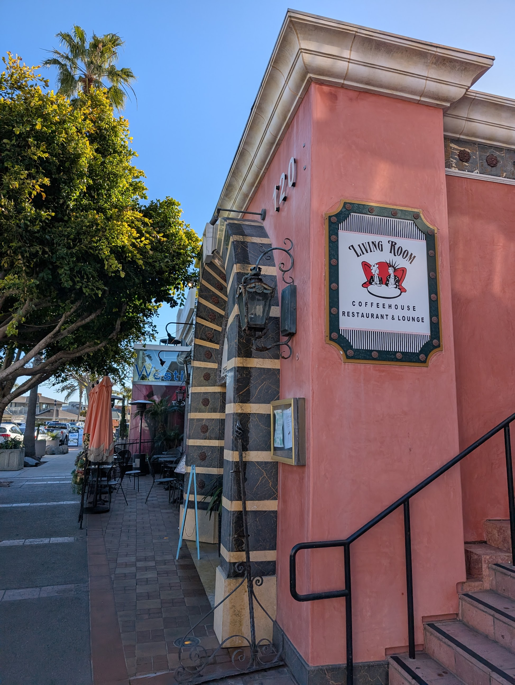

second iteration - it talks and remembers
March 12th, 2025
I've finally got a fully functioning app! Despite it being very barebones this is a great start with having a personal tour guide. Below is me and my aunt having a conversation with the assistant (in spanish!).
The fix itself was actually quite simple. I had written up the webRTC implementation that was able to output the text but was puzzled that the audio wasn't working. The moment I moved out of the free tier however it began to work. This is my fault for not reading the pricing page fully!
Prior to this though the main focus was adding support for accessing previous conversations made to the assistance. This involved using the Room package which is an abstraction of SQLite meant for android implementation. It took a bit of playing around but I was able to get it working! The goal is to have conversations be stored locally and uploaded to the cloud upon connecting to WIFI.
I also looked into login/signup functionality. After some investigation I found that using Auth0 was the best option as in the future it'll allow me to use it's credential features to store the data to it's appropriate user.
Below is a video of the app from sign-up to accessing your previous conversations. There's been some other UI additions such as `Desired Destination` and `Roadtrip Mode` where it will ping you when it finds an interesting stop as you're driving. This will be the third iteration.
And just like that I have an app that I can actually use! I was able to use it for the first time on my trip back from Mexico City. It guided me to The Living Room, a beautiful coffee shop in Downtown La Jolla. A coffee shop I never knew of until the guide. The coffee was great though I have a feeling it had a bit of extra flavor due to the app working (:

Next iteration will be a big one. I already got a ton of ideas from just that one usage. If anyone is interested I've begun internal testing for those interested. Just reach out if you'd like to try it!
This has been a ton of fun, on top of this I've taken up learning kernel development. Still early but it's also something I've wanted to look into for quite some time. Perhaps the next post will talk about just that! - mau